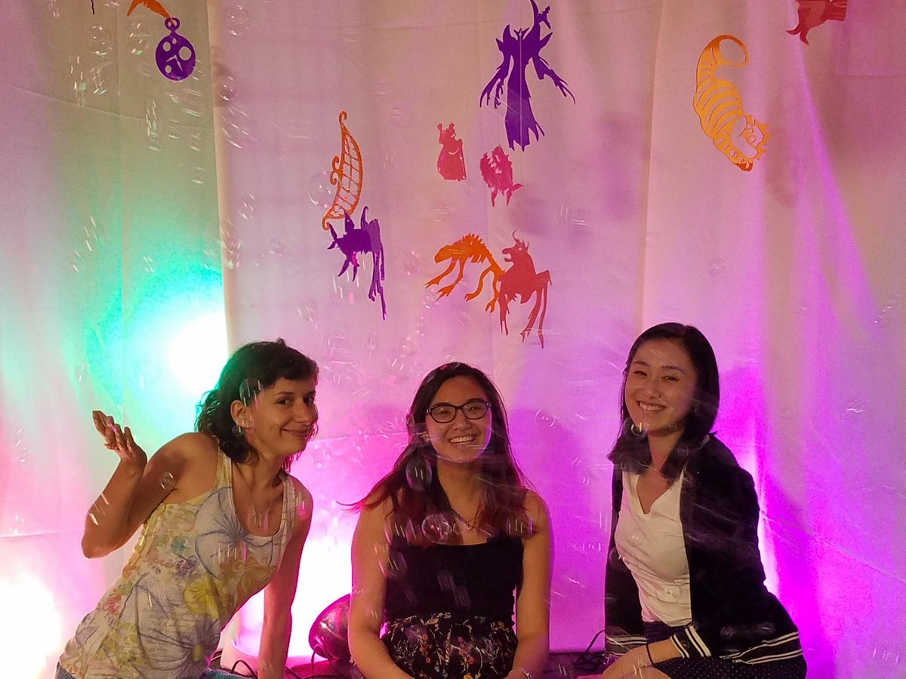

alice in wonderland
Phillips Hue, Acrylic, Microphone, Wemo Smart Plug, motor, Cognimates
A multimedia installation created in collaboration with Stefania Druga when she was a masters student at the MIT Media Lab. The installation was created as a demo for Cognimates, a platform designed to teach Machine Learning to 7 -14 year old children.
the team: Stefania Druga, Sarah Vu, and Tammy Qiu
The installation would ask participants to describe their latest dream. Then with a Sentiment Analysis API, the installation would change music and colors depending on if the dream was a pleasant one or not. I conceived of the concept and was also responsible for fabricating all of the acrylic components using a laser cutter. Stefania, Sarah Vu, and I worked together to put the whole installation together.

cognimates interface